<a class="backlink" routerLink="/home">BACK</a>
<section class="main-section">
    <router-outlet (activate)="showMsg=false"></router-outlet> 
    <h1 *ngIf="showMsg" class="msg">Select Instrument <span>&#10148;</span></h1>
</section>
<section class="sidebar">
  <button class="" routerLink="/home">
    
    <span>Back</span>
  </button>
  <button class="disabled">
    
    <span>Saxophone</span>
  </button>
  <button class="" routerLink="harmonica">
    
    <span>Harmonica</span>
  </button>
  <button class="" routerLink="block-flute">
    
    <span>Block flute</span>
  </button>
  <button class="" routerLink="trumpet" class="">
    
    <span>Trumpet</span>
  </button>
</section>